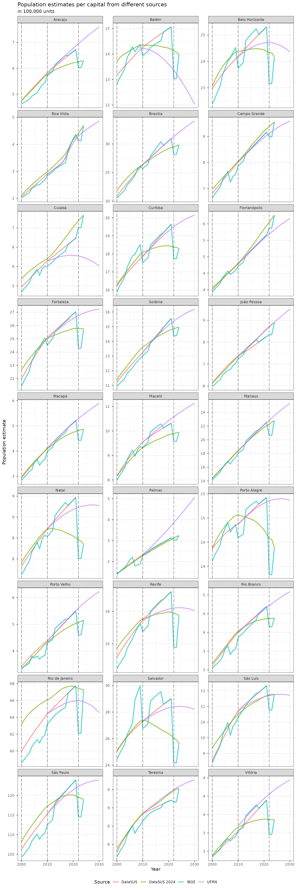

Population estimates comparison
Source:vignettes/articles/Population-estimates-comparison.Rmd
Population-estimates-comparison.RmdOn this article, we will compare the population estimates available
at the brpop package.
names_helper <- tibble(
uf_code = c("11","12","13","14","15","16","17","21","22","23","24","25","26","27","28","29","31","32","33","35","41","42","43","50","51","52","53"),
uf_name = c("Rondônia","Acre","Amazonas","Roraima","Pará","Amapá","Tocantins","Maranhão","Piauí","Ceará","Rio Grande do Norte","Paraíba","Pernambuco","Alagoas","Sergipe","Bahia","Minas Gerais","Espírito Santo","Rio de Janeiro","São Paulo","Paraná","Santa Catarina","Rio Grande do Sul","Mato Grosso do Sul","Mato Grosso","Goiás","Distrito Federal"),
cap_code7 = c(1100205,1200401,1302603,1400100,1501402,1600303,1721000,2111300,2211001,2304400,2408102,2507507,2611606,2704302,2800308,2927408,3106200,3205309,3304557,3550308,4106902,4205407,4314902,5002704,5103403,5208707,5300108),
cap_code6 = c(110020,120040,130260,140010,150140,160030,172100,211130,221100,230440,240810,250750,261160,270430,280030,292740,310620,320530,330455,355030,410690,420540,431490,500270,510340,520870,530010),
cap_name = c("Porto Velho","Rio Branco","Manaus","Boa Vista","Belém","Macapá","Palmas","São Luís","Teresina","Fortaleza","Natal","João Pessoa","Recife","Maceió","Aracaju","Salvador","Belo Horizonte","Vitória","Rio de Janeiro","São Paulo","Curitiba","Florianópolis","Porto Alegre","Campo Grande","Cuiabá","Goiânia","Brasília")
)Currently, the package present population estimates by municipalities, sex and age groups computed by the DataSUS (Brazilian Health Ministry) and by the UFRN-PPGDEM-LEPP laboratory. The package also have the total estimates computed by IBGE for inter-census years, and population data for Census and population inquiries years.
Total population per UF
First, we will compare the total population estimates, using the
brpop functions to aggregate the estimates per UF.
datasus_pop_uf <- uf_pop_totals(source = "datasus") |>
mutate(source = "DataSUS") |>
filter(uf != "5e")
ufrn_pop_uf <- uf_pop_totals(source = "ufrn") |>
mutate(source = "UFRN")
ibge_pop_uf <- uf_pop_totals(source = "ibge") |>
mutate(source = "IBGE")
bind_rows(datasus_pop_uf, ufrn_pop_uf, ibge_pop_uf) |>
left_join(names_helper, by = c("uf" = "uf_code")) |>
ggplot(aes(x = year, y = pop, color = source, group = source)) +
geom_line(stat = "identity", alpha = .7, lwd = 1) +
geom_vline(xintercept = c(2000, 2010, 2022), alpha = .5, linetype = "longdash") +
scale_y_continuous(labels = unit_format(accuracy = 1, scale = 0.00001, unit = NULL)) +
facet_wrap(~uf_name, scales = "free_y", ncol = 3) +
theme_bw() +
theme(legend.position = "bottom", legend.direction = "horizontal") +
labs(title = "Population estimates per UF from different sources",
subtitle = "in 100,000 units",
color = "Source", x = "Year", y = "Population estimate")
It can be observed that the estimates from DataSUS and UFRN generally agrees on tendency and present an overlapping period (2010 - 2021) with similar values. The IBGE population estimates present a more erratic pattern at some UFs.
Total population per capitals
Now let’s look at capitals data.
datasus_pop_mun <- mun_pop_totals(source = "datasus") |>
mutate(source = "DataSUS") |>
right_join(names_helper, by = c("code_muni" = "cap_code6"))
ufrn_pop_mun <- mun_pop_totals(source = "ufrn") |>
mutate(source = "UFRN") |>
right_join(names_helper, by = c("code_muni" = "cap_code7"))
ibge_pop_mun <- mun_pop_totals(source = "ibge") |>
mutate(source = "IBGE") |>
right_join(names_helper, by = c("code_muni" = "cap_code7"))
bind_rows(datasus_pop_mun, ufrn_pop_mun, ibge_pop_mun) |>
ggplot(aes(x = year, y = pop, color = source, group = source)) +
geom_line(stat = "identity", alpha = .7, lwd = 1) +
geom_vline(xintercept = c(2000, 2010, 2022), alpha = .5, linetype = "longdash") +
scale_y_continuous(labels = unit_format(accuracy = 1, scale = 0.00001, unit = NULL)) +
facet_wrap(~cap_name, scales = "free_y", ncol = 3) +
theme_bw() +
theme(legend.position = "bottom", legend.direction = "horizontal") +
labs(title = "Population estimates per capital from different sources",
subtitle = "in 100,000 units",
color = "Source", x = "Year", y = "Population estimate")
At the municipal level, the population estimates for the capitals presents more variability. At some capitals, the estimates from DataSUS and UFRN does not converge on the overlapping period. The IBGE estimates also present a more erratic pattern on some capitals.
Session info
sessionInfo()
#> R version 4.3.3 (2024-02-29)
#> Platform: x86_64-pc-linux-gnu (64-bit)
#> Running under: Ubuntu 22.04.4 LTS
#>
#> Matrix products: default
#> BLAS: /usr/lib/x86_64-linux-gnu/openblas-pthread/libblas.so.3
#> LAPACK: /usr/lib/x86_64-linux-gnu/openblas-pthread/libopenblasp-r0.3.20.so; LAPACK version 3.10.0
#>
#> locale:
#> [1] LC_CTYPE=C.UTF-8 LC_NUMERIC=C LC_TIME=C.UTF-8
#> [4] LC_COLLATE=C.UTF-8 LC_MONETARY=C.UTF-8 LC_MESSAGES=C.UTF-8
#> [7] LC_PAPER=C.UTF-8 LC_NAME=C LC_ADDRESS=C
#> [10] LC_TELEPHONE=C LC_MEASUREMENT=C.UTF-8 LC_IDENTIFICATION=C
#>
#> time zone: UTC
#> tzcode source: system (glibc)
#>
#> attached base packages:
#> [1] stats graphics grDevices utils datasets methods base
#>
#> other attached packages:
#> [1] brpop_0.4.0 scales_1.3.0 ggplot2_3.5.0 tibble_3.2.1 dplyr_1.1.4
#>
#> loaded via a namespace (and not attached):
#> [1] gtable_0.3.4 jsonlite_1.8.8 highr_0.10 compiler_4.3.3
#> [5] tidyselect_1.2.1 jquerylib_0.1.4 systemfonts_1.0.6 textshaping_0.3.7
#> [9] yaml_2.3.8 fastmap_1.1.1 dtplyr_1.3.1 R6_2.5.1
#> [13] labeling_0.4.3 generics_0.1.3 knitr_1.46 backports_1.4.1
#> [17] checkmate_2.3.1 desc_1.4.3 munsell_0.5.1 bslib_0.7.0
#> [21] pillar_1.9.0 rlang_1.1.3 utf8_1.2.4 cachem_1.0.8
#> [25] xfun_0.43 fs_1.6.3 sass_0.4.9 memoise_2.0.1
#> [29] cli_3.6.2 withr_3.0.0 pkgdown_2.0.7 magrittr_2.0.3
#> [33] digest_0.6.35 grid_4.3.3 lifecycle_1.0.4 vctrs_0.6.5
#> [37] data.table_1.15.4 evaluate_0.23 glue_1.7.0 farver_2.1.1
#> [41] ragg_1.3.0 fansi_1.0.6 colorspace_2.1-0 rmarkdown_2.26
#> [45] purrr_1.0.2 tools_4.3.3 pkgconfig_2.0.3 htmltools_0.5.8.1